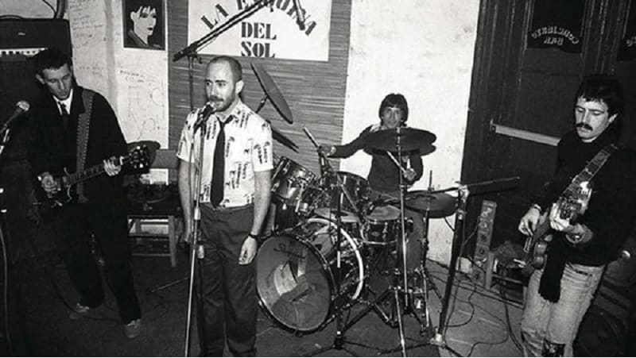

Introducción
Patricio Rey y sus Redonditos de Ricota, también conocidos como Los Redondos, fue un grupo musical de rock argentino formado en La Plata en el año 1976 e integrado, en su mayor parte, por el Indio Solari (voz y composición), Skay Beilinson (guitarra y composición), Semilla Bucciarelli (bajo), Walter Sidotti (batería) y Sergio Dawi (saxofón, armónica y piano). Es considerado uno de las grupos más importantes e influyentes de la historia de la música de Argentina, así como también uno de los más convocantes en términos de audiencia.
Comenzaron sus actuaciones en vivo en 1977, como una exhibición de rock teatral, con toda una troupe circense de monologuistas, payasos y bailarinas desnudistas, que entre canciones subían al escenario a hacer sus números.3 Progresivamente fueron deshaciéndose de los números teatrales, algo que terminaron de descartar tras la recepción de su álbum debut, Gulp! (1985). A partir de allí, se establecieron únicamente como un grupo musical. En la segunda mitad de la década de 1980, continuaron su firme ascenso, con el lanzamiento de álbumes como Oktubre (1986), Un baión para el ojo idiota (1988) y ¡Bang! ¡Bang! Estás liquidado (1989), coronándolo en diciembre de 1989 en el Estadio Obras Sanitarias con tres recitales. Luego de eso, se convirtieron en un fenómeno masivo con recitales en estadios cada vez más grandes, a la vez que empezaron a experimentar con rock alternativo y publicaciones polémicas, como lo fueron ambos volúmenes de Lobo suelto, cordero atado (1993) y Luzbelito (1996). Sin embargo, la violencia en los recitales, por parte de la policía, fue aumentando y cada vez hubo más incidentes, con heridos y muertes, como el caso Walter Bulacio en 1991. Esto provocó que el grupo se alejara de la capital y empezara, a partir de 1995, a hacer recitales en todo el país. A fines de siglo, la banda hizo un cambio en su estilo, al adoptar un sonido de rock electrónico en Último bondi a finisterre (1998) y Momo sampler (2000). La banda llegó a su clímax en abril de 2000 con el que fue su recital con mayor convocatoria: 70 mil asistentes en el Estadio Monumental. No obstante, el desgaste por la violencia crónica en sus recitales, sumado a diferencias artísticas entre los miembros, influyeron para que en noviembre de 2001 la banda anunciara su separación.
La banda recibió la aclamación de la crítica, ganando el Diploma al Mérito de la Fundación Konex en las ceremonias de 1995 y 2005, en ambos casos como reconocimiento a su trayectoria en la música argentina durante la década anterior, y ganando además en la de 2005 el Premio Konex de Platino a la mejor banda argentina de rock de la década, compartido con Divididos. En 2007, la revista Rolling Stone Argentina lanzó una lista de los mejores 100 álbumes de rock argentino de la historia, donde figuran sus álbumes Luzbelito (n.° 88), ¡Bang! ¡Bang! Estás liquidado (n.° 33) y Oktubre (n.° 4).4 En 2002 la revista y el canal de televisión MTV lanzaron también una lista de las mejores 100 canciones de rock argentino de la historia, donde figuran los temas «Un poco de amor francés» (n.° 54), «La bestia pop» (n.° 32) y «Ji ji ji» (n.° 5). En 2011, el diario La Nación publicó una lista con los mejores 10 videoclips del rock argentino, en la que la banda figura con «Masacre en el puticlub» en el cuarto puesto.